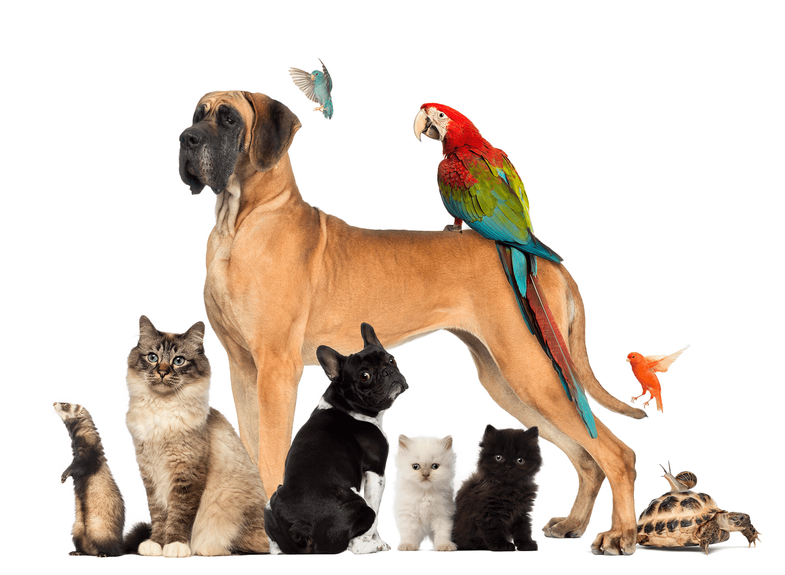

Expo Mascota, Yucatán 2018
Desde esta primera edición el objetivo primordial de Expo Mascota Yucatán, es el de promover la tenencia responsable de las mascotas y ofrecer al público que nos visita, una experiencia educativa y de convivencia con los animales.
Por eso, la Expo Mascota Yucatán no solo es una muestra de productos y servicios sino es toda una experiencia llena de actividades, exhibiciones y demostraciones educativas, eventos y convivencia familiar junto con las mascotas.
Ven a divertirte con tu familia, trae a tu mascota, participa en los eventos y actividades y conoce una extensa gama de productos y servicios que sin duda serán de utilidad para el cuidado, bienestar y calidad de vida de tu mascota.